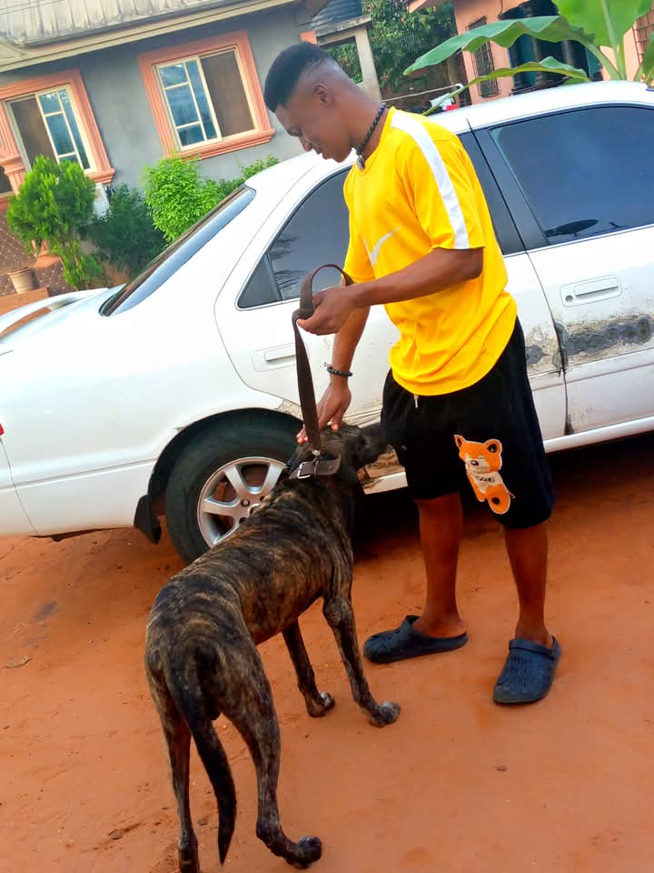

Hi, I'm Ugbe Ejiofor Wilfred.
Dogs have always held a special place in my heart because of the unconditional love, loyalty, and joy they bring into people's lives.
They are more than just pets, they are trusted companions who offer comfort, protection, and friendship without expecting anything in return.Their ability to remain faithful through every season of life is one of the many reasons I admire them so deeply.
This website was inspired by my passion for dogs and my desire to share that appreciation with others. Through this project, I wanted to showcase not only the beauty and uniqueness of different dog breeds but also create something meaningful while improving my web development skills.
Every image, layout, and section represents the effort I have put into learning and applying what I know.
As an upcoming web developer, I understand that every project is an opportunity to grow. I am still learning, making mistakes, solving problems, and discovering new techniques every day. This project reflects my creativity, dedication, and willingness to improve with each line of code I write. Although I am at the beginning of my journey, I am committed to becoming a skilled and professional full-stack developer.